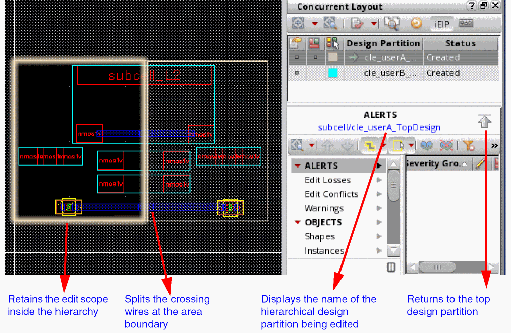

3
Working with Concurrent Layout Editing
Introduction to Editing in Concurrent Layout Environment
This chapter discusses how you can use Concurrent Layout to perform parallel editing. From Concurrent Layout Flow you can see that tasks in Concurrent Layout are dependent on whether you are in manager mode or a designer mode. There are certain tasks such as initializing the design and defining the design partitions that can be done only in manager mode, while tasks such as editing in the design partition or resolving the conflicts can be done only in designer mode. A single user can perform tasks of both, manager, or a designer at a time. You cannot have more than one manager for the top cell on which you are performing concurrent editing. However, you can have multiple designers working in parallel on different design partition views.
The chapter covers the following sections:
- Manager Mode Tasks
-
Designer Mode Tasks
- Editing a Design Partition by Single or Multiple Users
- Editing an Area-based Design Partition
- Editing in a Layer-Based Design Partition
- Reviewing Updates
- Importing a Peer Partition
- Checking All Edits
- Checking and Resolving Edit Conflicts
- Merging a Design Partition
- Recalling a Design Partition
- Working with Hierarchical Designs
- Editing a Hierarchical Design
- Merging Incremental EIP Updates
- Verifying Incremental EIP Updates
- Points to Remember
Manager Mode Tasks
The manager should have write permission on the top design for creating design partition views.
Initializing the Design
The first task for the manager is to initialize the design to get it ready for concurrent editing. To do this, perform one of the following:
- On the Concurrent menu, select Initialize.
- Select the Concurrent Layout assistant, click the Initialize button.
Initialization saves some information about all the objects in the design. It is used as a reference later to identify and merge back the objects edited in a design partition.
After the design is initialized for concurrent editing, additional options will be available on the Concurrent menu and the Concurrent Layout assistant. For more information on the options available in manager mode, see Concurrent
Defining Area-Based Design Partitions
After the design is initialized, you can start defining design partitions based on your editing requirements.
To define an area-based design partition:
-
On the Concurrent Layout assistant, click the Define Design Partition button or choose the Define Design Partition command on the Concurrent menu.
The Define Design Partition form appears. - For Partition Type, select Area.
-
Click Add.
A design partition with corresponding design partition view is added. Click Add if you want to add more design partitions.
The status of the new design partitions is Defined. If a design partition view already exists the status is Reuse.
By default, the names of the new design partitions and the corresponding design partition views arecle_px andlayout_cle_px, where x is a number. You can use the corresponding text boxes to specify different names.
Concurrent Layout uses the definition you made in the Define Design Partition form to identify which object belongs to which design partition. Information about the objects undergoing modification in a design partition is stored in the associated design partition view.
Edit scope for each design partition is set to select only those objects that are inside the current partition by default. You can change these settings from Concurrent Layout Options form or from the Concurrent Layout assistant in designer mode.
If Edit Scope is set to Off, editing objects outside the partition generates alerts in the Concurrent Layout assistant. You will have to individually sign off each alert and warning.
-
Next, attach one or more areas to the selected design partition:
To attach an area to the selected design partition, select the area boundary and then click the Attach button for the Areas option. Alternatively, click the Attach button and then select area boundaries on the canvas to attach. For further assistance, pressF3to display the Attach / Detach Areas form. After you have done the adjustment, click Update to apply the changes.
Note:
-
After you have completed defining all the design partitions, click Create.
A message box is displayed informing you about the design partitions that will be created.
-
Click OK.
The following actions take place:- Design partition views are created and the status Created is displayed in the Defined Design Partition for and the Concurrent Layout assistant.
- The top design is saved.
- Objects crossing the design partitions are split at the boundary. This happens because the Split Crossing Objects option is selected by default. To change the settings of how crossing objects are handled, click the button next to the Split Crossing Objects option to display the Split Crossing Objects Options form.
-
Click Close to exit the Define Design Partition form.
-
Open the Library Manager to review the created design partition views and observe the changes.
The created design partition view is of the minimum size. This is because only the changes made to the associated design partition are saved in this view.
Designers must have write permission to open a design partition view for concurrent editing. In the Design Management (DM) environment file permission is handled by the DM check-in and check-out process. Otherwise, the manager can use UNIX commands to change the file permissions.
When the manager and designers are in the same group, the following command can be used to grant the group write permission:
chmod -R g +w <design_partition_views>
Alternatively, you can change UMASK as shown below before launching Virtuoso to set the file permission for all the files created by the current Virtuoso process.
% umask
=> 22
Change the UMASK setting and start Virtuoso. You might need this setting when the manager and designers are not in the same group.
% umask 0
% virtuoso &
After you have defined and saved new design partitions, exit Virtuoso and restore the UMASK setting by using the following command.
Defining Layer-Based Design Partitions
After a design is initialized, you can start defining layer-based design partitions as follows.
-
On the Concurrent Layout assistant, click the Define Design Partition button or choose the Define Design Partition command on the Concurrent menu.
The Define Design Partition form appears. - For Partition Type, select Layer.
-
In the Partition Name field, specify a name for the new design partition, if needed. If you do not specify a name, the default name in this field is used.
-
Specify the top and bottom layers to be included in the design partition in the Layers field.
-
To remove certain layers from the layer range or add other visible layers from the Palette, click the Layer Preview button.
The Partition Layers form that appears.
In this form you can: -
(Optional) To rebase a Concurrent Layout constraint group to a different parent constraint group, select it from the Create design CGs based on drop-down list and then click OK in the message box.
This option specifies the parent constraint group based on which all the Concurrent Layout constraint groups dedicated to each design partition are created. -
Click Add to add one or more design partitions.
A design partition with the corresponding design partition view is added.
The status of the new design partitions is Defined. If a design partition view already exists, the status is Reuse.
By default, the names of the new design partitions and the corresponding design partition views arecle_px andlayout_cle_px, where x is a number that is incremented for each new design partition. You can use the corresponding text box to specify different names. -
After you have completed defining all the design partitions, click Create.
A message box appears listing the design partitions that will be created. -
Click OK.
You will notice the following:- Design partition views are created, and the status Created is displayed in the Defined Design Partition form and the Concurrent Layout assistant.
- The top design is saved.
-
Two types of Concurrent Layout constraint groups dedicated to each design partition are created to enable layer constraints. For more details, see Editing in a Layer-Based Design Partition.
-
Click Close to exit the Define Design Partition form. In the Design Management environment, an additional dialog box is displayed to confirm that new design partition views have been checked into the design management system.Open the Library Manager to review the created design partition views and observe the changes.
The created design partition view is of the minimum size. This is because only the changes made to the associated design partition are saved in this view.
Designers must have write permission to open a design partition view for concurrent editing. In the Design Management (DM) environment, file permission is handled by the DM check-in and check-out process. Otherwise, the manager can use UNIX commands to change the file permissions.
Merging or Rejecting the Submitted Design Partitions
After the designers have completed editing the design (see Designer Mode Tasks) and submitted their respective design partitions for merge, the manager needs to review these requests and then either approve or reject the merge requests.
To either approve or reject merge requests:
-
Click the Merge/Unmerge button in the Concurrent Layout assistant on the Concurrent menu.
The Merge form is displayed. -
Click in the Action field of the design partitions you want to merge and change the value to Merge.
To reject a design partition, in the Action field of the design partitions you want to reject and change the value to Reject. -
Click the Apply button.
Design partitions with action set as Merge will be merged with the top design.
Information regarding the actions taken will be added to the message box on the form. -
Click on the Messages button to view the merge log.
In case a conflict is detected during merge, then when you click the Messages button an HTML file is displayed with the Merge Report. This report will have details about the conflicts as shown in the screenshot below.
-
Select Commit (Save) on the Merge form to complete the merge process. This step recursively merges the children hierarchical design partition views into the subcell and commit the changes.In the Concurrent Layout assistant, the design partition view status changes to Committed.
For rejected partitions the Reject Submission form is displayed. Provide the reason for rejecting the merge request and click OK.
In the Concurrent Layout assistant, the status of the rejected design partitions will change to Rejected and the status of the merged partitions will change to Merged.
Designer Mode Tasks
After the required design partition and design partition views are created, designers can start editing in the allocated design partition views. Concurrent Layout can be used both in single-user and multiple-user modes. Designers should have write permission on design partition views that store the edits of the top design.
Editing a Design Partition by Single or Multiple Users
In single-user mode the manager can move to designer mode to edit the design. Updates made in Concurrent Layout do not affect the top design until you merge the updates made in the design partition views with the top design. This is why you can use concurrent editing in single user mode to edit the design in different ways, and then merge the update that works the best.
When a single user is editing the design, in the Concurrent Layout assistant right-click the design partition you want to edit and select Edit in Design Partition. The design switches to designer mode.
If multiple users are working on different design partitions open Library Manager and then select the design partition view you want to edit.
Editing an Area-based Design Partition
In designer mode, by default in area-based design partitions, the area boundary for the selected design partition is highlighted and the region outside to it is grayed out. This happens because the Only Select Inside Partition option is enabled by default in the Concurrent Layout assistant.
This helps in preventing users from selecting any objects outside their area partition. Additionally, wire that is crossing the design partition is split by default at the boundary.
-
To edit the design, lets create a rectangle, inside the partition.
-
Next, add a shape outside the current design partition.
You will have to sign of the edits that are done outside the area boundary of the current partition. If your edit was done intentionally, sign off should indicate that they need to be retained. If any edits are not to be retained, use the filter to mark these changes and then use the Remove Changes from Design Partition View button to delete the filtered changes.
After you have completed editing the design, save the design. The status of the design will change to Not submitted. You can continue editing the design after saving.
Save the design when editing is complete. You can now check the size of the edited design partition in Library Manager. You will notice a marginal increase in the size indicating that the design partition now comprises saved changes.
Editing in a Layer-Based Design Partition
When you create a layer-based design partition, two constraint groups dedicated to it are also created automatically. These constraint groups are applied according to Edit Scope settings to enable the layer constraint while routing.
The following table shows these two constraint groups associated with a design partition. The Type 1 constraint group uses the same name as the design partition, and the Type 2 constraint group adds _res_ to its name denoting that it restricts valid vias based on the design partition definition.
|
Keep all valid vias inherited from the parent constraint group. |
|||||
|
Restrict valid vias by removing those outside the design partition definition from the parent constraint group. |
When you open a layer-based design partition, the Layer Palette, the Default Wire Constraint Group, and the Default Via Constraint Group change according to the Edit Scope.
The Only Select Inside Partition option is enabled by default, and when this option is active, the CLE filter is available in the Layer Palette.

The CLE filter is selected by default and lets you see only those layers that are available in the current layer-based design partition. Even if you deselect this filter to show all layers, for layers outside the design partition definition cannot be selected. The Default Wire Constraint Group and the Default Via Constraint Group change to the Type 1 constraint group. When you create or modify a via for which the cut layer is outside the current design partition definition, a warning glyph is displayed. Sign off these edits in the assistant, to retain them.
Enabling the Only Edit Inside Partition option enables the CLE filter in the Layer Palette and applies the Type 2 constraint group.
If you change the status of Edit Scope to Off, the CLE filter in the Layer Palette is disabled and hidden and you can see and use all layers. The Default Wire Constraint Group and the Default Via Constraint Group are reset. You must sign off all intentional edits that are outside the current design partition.
Reviewing Updates
To review the updates you have made:
-
Right-click the design partition and select Show Detailed Changes.
Updates made to the design are highlighted in the canvas. Make sure that updates are as needed, otherwise, make the required edits.
Importing a Peer Partition
To import changes made to the peer design partitions:
-
Right-click the design partition and click Import Peer Design Partitions.
Alternatively, choose Import Peer Design Partitions on the Concurrent menu.
The Import Peer Design Partition form is displayed. Use this form to select and import updates from peer partitions. This option is useful in viewing the updated design as a whole.
In constraint-aware editing, when a new wire with net is imported from a peer partition, to prevent wire commands from changing this wire and prevent edit loss, Concurrent Layout automatically sets the wire to locked. This triggers Constraint Manager to create a locked constraint on the wire's net that, in turn, prevents designers from moving the wire, preventing edit loss. This constraint appears only when such peer partition is imported.
Checking All Edits
To check your edits after importing peer designs:
-
Right-click the design partition and click the Post-Edit Check All Edits option.
This command lets you check all objects modified by you to check for any new violations. Any warning or alerts related to violations and edit conflicts are reflected in the Summary Pane and Details Pane of the Concurrent Layout assistant.
Checking and Resolving Edit Conflicts
To check the log of all conflicts:
-
Right-click on the design partition and then click Check Edit Conflicts.
The Check Edit Conflicts form is displayed. You can use this form to thoroughly check for conflicts between the selected design partitions and the top design. You should either resolve or sign off edit conflicts before submitted your design for merge. You can view alerts and warnings and then either resolve or sign-off these conflicts from the Summary Pane and Details Pane of the Concurrent Layout assistant.
Merging a Design Partition
To merge a design partition with the top design:
-
Click the Submit for Merge button on the Concurrent Layout toolbar in the Concurrent Layout assistant.
Alternatively, choose the Submit for Merge / Recall command in the Concurrent menu. - If the Save Changes dialog box is displayed, click Yes to save the design.
-
Review the details in the Submit for Merge dialog box and click OK.
The status of the design partition will changes to Submitted and the Submit for Merge button on the Concurrent Layout toolbar will changes to Recall.
Recalling a Design Partition
To recall a design partition submitted for merge:
-
Click the Recall button on the Concurrent Layout toolbar in the assistant.
Alternatively, choose the Submit for Merge / Recall command on the Concurrent menu. -
In the Recall Submission dialog box, click OK.
The design partition will be recalled and the status will change to Editing.
Working with Hierarchical Designs
Hierarchical editing in the CLE flow lets multiple designers concurrently Edit In Place (EIP) into hierarchical subcells. The edit scope is retained in both area and layer-based design partitions. In area-based design partitions, area partitions defined at the top are pushed down the hierarchy. In layer-based design partitions, edit scope is limited to the layers available in the top design partition.
Concurrent hierarchical editing has two modes, Regular and Incremental. Concurrent Layout automatically detects the case and enables one of the following modes for hierarchical editing.
- Regular mode The main cellview is edited, and only one designer can edit at a time. This implies that concurrent editing of a hierarchical subcell is not possible in this mode. Additionally, it is not possible to undo any changes after they are saved. Hierarchical editing is done in regular mode when one of the following is true:
- Incremental mode The original hierarchical subcell is not modified. Hierarchical design partition views are created when you descend into the design. Area partitions from the parent top partition are pushed down to retain the edit scope in the concurrently edited hierarchical subcell. This mode is enabled when the following conditions are true:

Editing a Hierarchical Design
To edit a hierarchical design:
-
In designer mode, open the design partition view that you want to edit.
Let's assume that the
userAdesign partition view is the parent top-level design partition view. -
Choose Edit – Hierarchy – Descend Edit or press
xto EIP. -
Point to the subcell you want to EIP. If all the conditions for editing in Incremental mode are met, the Hierarchical Edit Setup Form is displayed with Edit Mode as Incremental.
Here,-
In the Hier. Partition name, the suffix
(+1)with the name indicates the number of hierarchical design partition views that will be created. In this case, two hierarchical design partition views will be created one for the current useruserAand another one for the peer useruserB. -
The Hier. Partition View name contains the name of the top design partition view,
userA, and the name of the top design,TopDesign.
-
In the Hier. Partition name, the suffix
-
Click OK to create the hierarchical design partition views for the subcell.
You can check these views in the Library Manager.
Here,layout_cle_userA_TopDesignis the incremental view foruserAandlayout_cle_userB_TopDesignis the incremental view foruserB.
When you EIP this hierarchical subcell from the top design partition viewlayout_userB, you are automatically redirected into the incremental hierarchical partition viewlayout_cle_userB_TopDesign, which was created by the first peer designeruserA. Therefore, Hierarchical Edit Setup Form will not be displayed.
The Hier. Partition View (child) stores a reference back to the top-level design partition (parent) and all the incremental descend edits. The parent design partition area is now pushed down to the child so the designer can continue to edit in the same design partition area across the hierarchy.
 -
Make some edits in the design and click File – Save to save the changes.
-
To return to the top-level design partition view, choose Edit – Hierarchy – Return to Level.
Alternatively, click the Return to top partition button in the Concurrent Layout assistant.
When doing incremental EIP, the top-level design partition view is at level 0, whereas incremental EIP happens at level n, where n represents the level of the hierarchical subcell being edited. -
To view all changes made during incremental EIP, right-click the object representing the hierarchical design partition view and choose Show Detailed Changes (EIP).
This will perform EIP in read-only mode. The object is shown in the Cells category in the OBJECTS section on the Summary Pane.
- At the top-level design partition view, click File – Save to save this layout configuration, which is a reference to the child hierarchical design partition that you just edited.
-
Repeat these steps for the peer design partition.
When you open the peer design partition, the Import Peer Design Partition form is displayed. Click Yes or No based on whether you want to view changes made by the peer user.
If you choose to import peer changes, the imported changes are marked by a halo in the canvas.
You can use the Layout Configuration form in Concurrent Layout to load or unload the changes in the design hierarchy.
Load the changes if the changes look fine in all occurrences of the subcell and unload the changes if the changes look incorrect in other occurrences of subcell.
Incremental EIP cannot be done from a read-only top partition. Therefore, when you EIP from a read-only top partition or if a subcell cannot be opened for editing, EIP is done in regular mode. The following information displayed in the Concurrent Layout assistant.
Merging Incremental EIP Updates
Merge at the top design is made easy because the parent and the child are kept in sync. For example, submitting the parent design partition view for merge automatically includes all child design partition views. Similarly, opening a submitted child design partition view for edit will automatically recall both the parent and child design partition views. Merging a parent will automatically load the children into the memory. To verify DRC, ensure to stream out the entire design hierarchy from VM.
Return to the top-level design partition. Next, to submit updates made in the subcell, click the Submit for Merge button on the Concurrent Layout toolbar in the Concurrent Layout assistant. Alternatively, choose the Submit for Merge or Recall command on the Concurrent menu.
In case you have already exited without submitting for merge:
- Open the top-level design partition view from Library Manager.
-
In the Concurrent Layout assistant, select top design partition to merger and click Submit for Merge.
Alternatively, choose the Submit for Merge / Recall command on the Concurrent menu. - In the Submit for Merge dialog box, click OK and then close the top-level design partition view.
- Open the top design cellview.
-
Click the Merge button on the Concurrent Layout toolbar in the Concurrent Layout assistant.
Alternatively, choose the Merge command on the Concurrent menu to merge the top-level design partition with the top design. - Check the message box for successful merge of all design partition views and automatic loading of layout configurations.
Verifying Incremental EIP Updates
Changes made to the hier. design partition are saved in the hier. design partition view (child) pointed by a layout configuration. When a parent top-level design partition view is opened or imported, the layout configuration is automatically loaded, including all the changes in the child design partition view. These changes are applied to all occurrences of this subcell in the top-level design partition view.
Next time when you open or import a design partition view with a layout configuration, it will be automatically loaded. You can verify this on the Layout Configuration form as shown below.
The value Yes in the Loaded column indicates that the incremental changes have been imported to the subcell. The manager can see layout configurations in all design partitions and load them as needed. Layout configurations are loaded automatically for the designer, which means the subcell design in memory will contain the incremental changes. However, if the designer opens the subcell cellview from the disk, the layout configuration is automatically unloaded and an Unloaded Configurations warning is displayed in the assistant.
After this subcell cellview is closed, you can click the Load button to refresh the selected layout configurations.
Points to Remember
Here are some points to remember while editing in Concurrent Layout:
-
Net deletion and property changes of cellviews (
cv~>prop) are not merged or imported. Net deletions can trigger unexpected deletions in the current partition. They are automatically updated in the top design. Similarly, property changes can cause edit conflicts so they are updated only in the top design. - Avoid running block-level commands, such as automatic placement and routing, floor planning, pin optimization and, recolor all, because this may generate several edit conflicts if they run in two design partitions.
- Snap Boundary and P&R Boundary are global and should be modified only in the top design.
- Generate All From Source is disabled after initialization because it can erase concurrent layout editing data saved in the initial design. Run this command before initialization.
- There will be edit conflicts between two partitions if Generate Selected From Source picks the same objects.
-
To filter out-of-area markers, type the following in the CIW, and after opening the design partition view, click Hide Checked Markers in Annotation Browser.
envSetVal("layout.cle" "filterMarkerOutOfArea" 'boolean t)
- Saving many changes in a design partition view may slow down the open and save process, therefore, it is recommended to merge periodically (> 10k updates), or save the design partition view as a full design partition view to speed up these processes.
Return to top